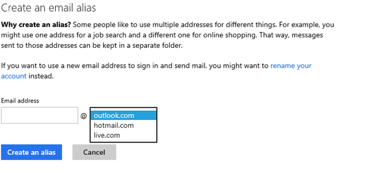
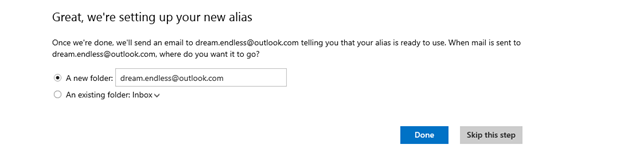

I have had my Microsoft account migrated from the old Hotmail to the new Outlook.com look for a while now. In general, the new Outlook.com has a MUCH better user interface than the old Hotmail.
I have also been migrating away from my Gmail account to a different email provider. I have been using Gmail for a LONG time, since 2004. However, some recent privacy snafus on Google's part and the abandonment of Google Reader inspired me to migrate over. So I have decided to give Outlook.com a try (and don't worry, I have no illusions about Microsoft and my privacy eitherJ)
Now that I am paying more attention to Outlook I have run across a feature I wasn't previously aware of, and it is awesome. What feature is that? Outlook.com email aliases.
First, a quick overview of how I use email. I have personal email, hosted on a Google apps domain. This is what I use for emailing with family and friends. Not being a huge spam fan, I then use my Google Gmail address for all things "Internet". So for sites like Facebook, LinkedIn or Netflix I sign up using my Gmail address.
The one problem with this is there are some sites I trust with my email address more than others. I know some sites are going to spam me than others and are more likely to "share" my email address. For example, once Tickemaster gets your email, everyone has your email. Some sites you visit require you to have an email address to access content, and you have no idea what you are getting yourself into. With Gmail, I have used the + trick, which allows you to create a disposable email address that will automatically come to your account. For example, if your email address is me@gmail.com, you can use your address name and a plus(+) sign, me+SpamingNewsletter@gmail.com and email will go to your original address. I usually end up forgetting these over time. The other thing is, you are not fooling anyone. Even if you use me+SpammingNewsletter@gmail.com, people know your email address is me@gmail.com.
So this is where Outlook.com email alias feature comes in, and it's awesome.
First, to create an alias, go to the Gear icon and choose Mail Settings. From there, under account, choose Create an Outlook alias.

You can choose to create an address from any of Microsoft's current email domains; Live, Hotmail and Outlook.
Type in your new email alias and then you are given the option to create a new folder where all of your email gets moved when it is sent to the alias or you can send it to your inbox

Now you have a new email address associated with your default outlook.com account.
Here is what I find so great about this.
First, you can create multiple aliases, up to five a year, associated with your account. Personally, I have created two separate outlook.com aliases. One, I use for the Internet I trust. For example, my Facebook, Netflix, Linked accounts, etc. They all have been, or are in the process of getting migrated to an Outlook alias. I have a second alias, for the Internet I don't trust. These are things like Ticketmaster, or mailing lists. Essentially, anyone I am afraid of sending me spam. I can then log into my default outlook.com account, and see emails to both of those aliases and they are in folders.
The second thing that I like about the outlook aliases is that you cannot log in with them. So, let's say LinkedIn gets hacked and my email address is in the hand of a bored script kiddie in the Ukraine. They will not be able to access my account at all because the alias is just for email and NOT account access.
It appears email aliases have been around for a long while in Outlook/Hotmail, I was just never aware of them. They are a great tool in helping clean up your accounts on the internet, and they add an extra level of security in case one of the sites you access gets hacked and your account is one of them. Check them out!
Update: That did not last long... Apparently Microsoft will soon enable the ability to log in via aliases (from Outlook.com blog). Hopefully this will be an optional feature.